Bicycle Sharing in Seattle
November 10 2016 • 28 min read
Image by Tiffany Nutt
Introduction
This is an exploration of bicycle-sharing data in the city of Seattle, WA (USA) from October 2014 - August 2016. I hope to eventually combine this data with other forms of ride-sharing and transportation in the city, but this will be the first step.
Time to get started!
Loading Necessary Packages
# For data manipulation and tidying
library(dplyr)
library(lubridate)
library(tidyr)
# For mapping
library(ggmap)
library(mapproj)
# For data visualizations
library(ggplot2)
# For modeling and machine learning
library(caret)Importing Data
All of the data can be downloaded from the bicycle-sharing service “Pronto!”’s website or from Kaggle. This project contains 3 data sets and I’ll import and inspect each data file independently.
station <- read.csv(file = "2016_station_data.csv", header = TRUE,
stringsAsFactors = FALSE)
trip <- read.csv(file = "2016_trip_data.csv", header = TRUE,
stringsAsFactors = FALSE)
weather <- read.csv(file = "2016_weather_data.csv", header = TRUE,
stringsAsFactors = FALSE)Ok, let’s take a look at each of these data files.
Data Structures and Variables
Station
## Observations: 58
## Variables: 9
## $ station_id <chr> "BT-01", "BT-03", "BT-04", "BT-05", "CBD-03"...
## $ name <chr> "3rd Ave & Broad St", "2nd Ave & Vine St", "...
## $ lat <dbl> 47.61842, 47.61583, 47.61609, 47.61311, 47.6...
## $ long <dbl> -122.3510, -122.3486, -122.3411, -122.3442, ...
## $ install_date <chr> "10/13/2014", "10/13/2014", "10/13/2014", "1...
## $ install_dockcount <int> 18, 16, 16, 14, 20, 18, 20, 20, 20, 18, 16, ...
## $ modification_date <chr> "", "", "", "", "", "", "", "11/9/2015", "",...
## $ current_dockcount <int> 18, 16, 16, 14, 20, 18, 20, 18, 20, 18, 0, 1...
## $ decommission_date <chr> "", "", "", "", "", "", "", "", "", "", "8/9...Looks like this dataset is dealing with 9 variables:
- Station ID : The individual ID number for a bike station
- Name : The name of that station ID, also appears to be the rough location of the station
- Latitude : The latitude of the station
- Longitude : The longitude of the station
- Install Date : When that particular station was installed (in MM/DD/YYYY format)
- Install Dock Count : Number of docks (bike positions) available at each station on installation day
- Modification Date : When a particular station was modified (in MM/DD/YYYY format)
- Current Dock Count : Number of docks (bike positions) available at each station on August 31, 2016
- Decommission Date : The date that a particular station was put out of service (in MM/DD/YYYY format)
Trip
## Observations: 236,065
## Variables: 12
## $ trip_id <int> 431, 432, 433, 434, 435, 436, 437, 438, 439,...
## $ starttime <chr> "10/13/2014 10:31", "10/13/2014 10:32", "10/...
## $ stoptime <chr> "10/13/2014 10:48", "10/13/2014 10:48", "10/...
## $ bikeid <chr> "SEA00298", "SEA00195", "SEA00486", "SEA0033...
## $ tripduration <dbl> 985.935, 926.375, 883.831, 865.937, 923.923,...
## $ from_station_name <chr> "2nd Ave & Spring St", "2nd Ave & Spring St"...
## $ to_station_name <chr> "Occidental Park / Occidental Ave S & S Wash...
## $ from_station_id <chr> "CBD-06", "CBD-06", "CBD-06", "CBD-06", "CBD...
## $ to_station_id <chr> "PS-04", "PS-04", "PS-04", "PS-04", "PS-04",...
## $ usertype <chr> "Member", "Member", "Member", "Member", "Mem...
## $ gender <chr> "Male", "Male", "Female", "Female", "Male", ...
## $ birthyear <int> 1960, 1970, 1988, 1977, 1971, 1974, 1978, 19...This dataset appears to contain 12 variables:
- Trip ID : An identification number assigned to each trip (from one bike station to another)
- Start Time : The time and date that a bike was borrowed from a station (in MM/DD/YYYY HH:MM format)
- Stop Time : The time and date that a bike was returned to a station (in MM/DD/YYYY HH:MM format)
- Bike ID : The identification number for a specific bike
- Trip Duration : Time of trip (measured in seconds)
- From Station Name : The name of the station where the bike was borrowed from
- To Station Name : The name of the station where the bike was returned to
- From Station ID : The ID number of the station where the bike was borrowed from
- To Station ID : The ID number of the station where the bike was returned to
- User Type : Indicates whether the user was a “Member” (i.e., someone with a monthly or annual membership to Pronto!) or a “Short-Term Pass Holder” (i.e., someone who purchased a 24 hour or 3 day pass)
- Gender : The gender of the rider (if known)
- Birth Year : The year that the rider was born
Weather
## Observations: 689
## Variables: 21
## $ Date <chr> "10/13/2014", "10/14/2014", "10/15/...
## $ Max_Temperature_F <int> 71, 63, 62, 71, 64, 68, 73, 66, 64,...
## $ Mean_Temperature_F <int> 62, 59, 58, 61, 60, 64, 64, 60, 58,...
## $ Min_TemperatureF <int> 54, 55, 54, 52, 57, 59, 55, 55, 55,...
## $ Max_Dew_Point_F <int> 55, 52, 53, 49, 55, 59, 57, 57, 52,...
## $ MeanDew_Point_F <int> 51, 51, 50, 46, 51, 57, 55, 54, 49,...
## $ Min_Dewpoint_F <int> 46, 50, 46, 42, 41, 55, 53, 50, 46,...
## $ Max_Humidity <int> 87, 88, 87, 83, 87, 90, 94, 90, 87,...
## $ Mean_Humidity <int> 68, 78, 77, 61, 72, 83, 74, 78, 70,...
## $ Min_Humidity <int> 46, 63, 67, 36, 46, 68, 52, 67, 58,...
## $ Max_Sea_Level_Pressure_In <dbl> 30.03, 29.84, 29.98, 30.03, 29.83, ...
## $ Mean_Sea_Level_Pressure_In <dbl> 29.79, 29.75, 29.71, 29.95, 29.78, ...
## $ Min_Sea_Level_Pressure_In <dbl> 29.65, 29.54, 29.51, 29.81, 29.73, ...
## $ Max_Visibility_Miles <int> 10, 10, 10, 10, 10, 10, 10, 10, 10,...
## $ Mean_Visibility_Miles <int> 10, 9, 9, 10, 10, 8, 10, 10, 10, 6,...
## $ Min_Visibility_Miles <int> 4, 3, 3, 10, 6, 2, 6, 5, 6, 2, 10, ...
## $ Max_Wind_Speed_MPH <int> 13, 10, 18, 9, 8, 10, 10, 12, 15, 1...
## $ Mean_Wind_Speed_MPH <int> 4, 5, 7, 4, 3, 4, 3, 5, 8, 8, 9, 4,...
## $ Max_Gust_Speed_MPH <chr> "21", "17", "25", "-", "-", "-", "1...
## $ Precipitation_In <dbl> 0.00, 0.11, 0.45, 0.00, 0.14, 0.31,...
## $ Events <chr> "Rain", "Rain", "Rain", "Rain", "Ra...This dataset represents quite a bit of weather data in 21 variables.
- Date : The date in MM/DD/YYYY format
- Max Temperature F : The maximum temperature that day (in degrees F)
- Mean Temperature F : The average temperature that day (in degrees F)
- Min Temperature F : The minimum temperature that day (in degrees F)
- Max Dew Point F : The maximum dew point (in degrees F)
- Mean Dew Point F : The average dew point (in degrees F)
- Min Dew Point F : The minimum dew point (in degrees F)
- Max Humidity : The maximum humidity (in %)
- Mean Humidity : The average humidity (in %)
- Min Humidity : The minimum humidity (in %)
- Maximum Sea Level Pressure : The maximum atmospheric pressure at sea level (in inches of mercury)
- Mean Sea Level Pressure : The average atmospheric pressure at sea level (in inches of mercury)
- Min Sea Level Pressure : The minimum atmospheric pressure at sea level (in inches of mercury)
- Max Visibility Miles : The maximum visibility (in miles)
- Mean Visibility Miles : The average visibility (in miles)
- Min Visibility Miles : The minimum visibility (in miles)
- Max Wind Speed MPH : The maximum sustained wind speed (in miles per hour)
- Mean Wind Speed MPH : The average sustained wind speed (in miles per hour)
- Max Gust Speed MPH : The maximum gust wind speed (in miles per hour)
- Precipitation : The amount of precipitation (measured in inches)
- Events : Weather events that occurred that day (e.g., rain, fog, snow, thunderstorm etc.)
Data Visualizations
Exploring the Stations Dataset
Since the “Stations” dataset was the first one I imported, let’s start with a little exploration there. First of all, how many unique stations are we dealing with?
station %>% summarise(n_distinct(station_id))## n_distinct(station_id)
## 1 58Wow! 58 different stations! Let’s take a quick peek at where they are located.
station_locs <- station %>% group_by(station_id) %>% select(1:4,
-2)# Load the correct map
mymap <- get_map(location = "Seattle", maptype = "roadmap", zoom = 12)
# Plot a single point for each Station ID
ggmap(mymap) + geom_point(aes(x = long, y = lat), data = station_locs,
alpha = 0.7, color = "darkred", size = 2)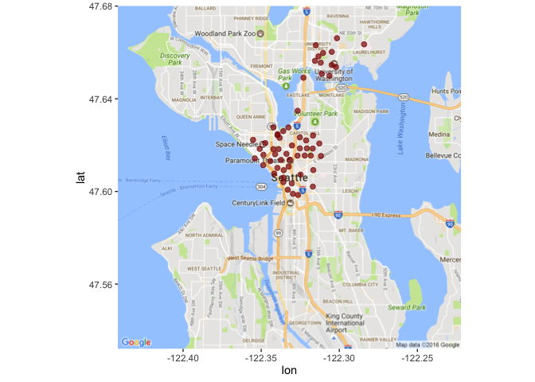
So it looks like all of the stations are located near the Lower Queen Anne, Belltown, International District, Capitol Hill and University of Washington areas. Let’s take a more zoomed-in look.
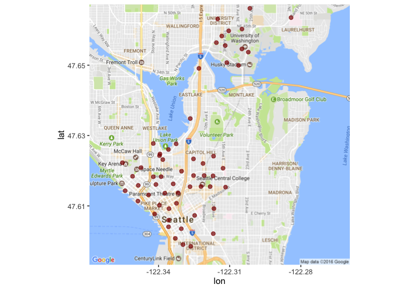
Great! So the locations are pretty well clustered. I wonder what order they were added in.
Station Installations
First, let’s convert those character-string date objects to actual dates using the lubridate package.
station$install_date <- mdy(station$install_date)# How many times were new stations installed?
station %>% summarise(n_distinct(install_date))## n_distinct(install_date)
## 1 9# How many stations were installed on each date?
station %>% group_by(install_date) %>% summarise(count = n()) %>%
arrange(install_date)## # A tibble: 9 × 2
## install_date count
## <date> <int>
## 1 2014-10-13 50
## 2 2015-05-22 1
## 3 2015-06-12 1
## 4 2015-07-27 1
## 5 2015-09-15 1
## 6 2015-10-29 1
## 7 2016-03-18 1
## 8 2016-07-03 1
## 9 2016-08-09 1It looks like the vast majority (86%) of the stations were added on opening day. Let’s see where those original ones were and where the rest were added.
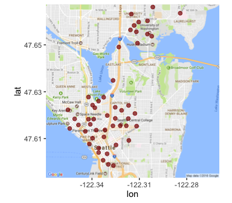
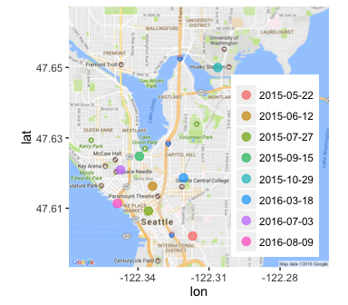
So they added more stations throughout the district that they serve, instead of adding several new stations to a single neighborhood all at once. Good to know.
Now, I wonder how many bikes can be parked at each station (as of August 31,2016)?
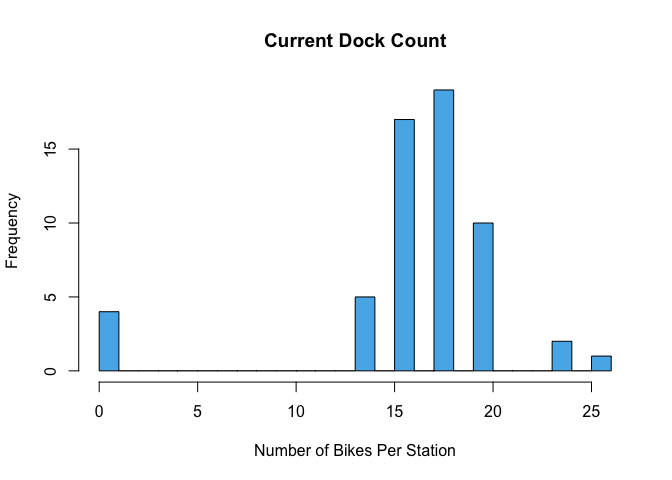
Well that’s weird, some of the stations have a dock count of 0. I’m assuming they didn’t start that way. Let’s calculate the change in dock count from station installation to August 31, 2016 and plot it on a map.
dock_change <- station %>% group_by(station_id) %>% select(station_id,
long, lat, ends_with("dockcount")) %>% mutate(dock_change = current_dockcount -
install_dockcount)Change in Number of Bike Docks Per Station
Any stations with no change in number of docks are not shown here.
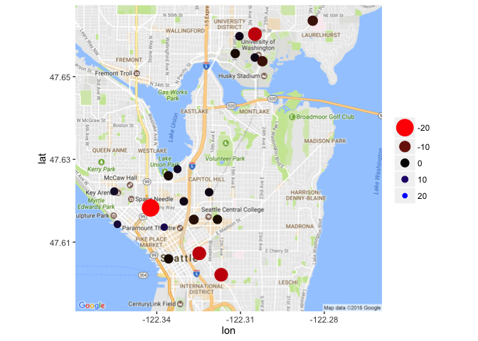
Wow! Looks like quite a few stations took away bike docks and none gained any. Perhaps those stations weren’t being used very frequently. We’ll have to look at that a bit later.
Current Station Size
I’m going to take one quick look at the current size of each station before moving on to the next dataset. Note: I did not include any stations that were closed as of August 31, 2016 in this map
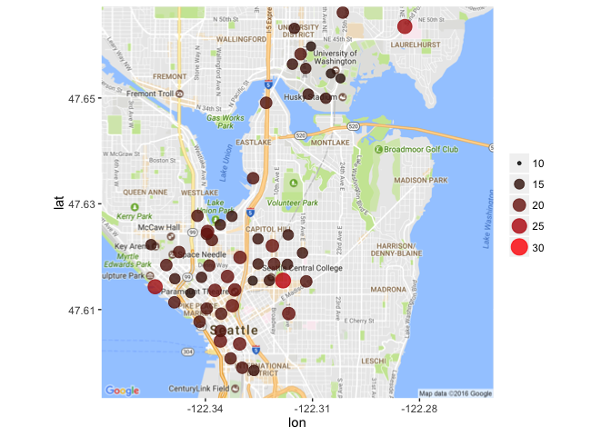
So it looks like the biggest stations tend to be on the outskirts of the rest. Where there are several stations in close proximity, there tend to be fewer bike docks at each station. That makes sense, logically speaking. If you go to a station and there is no bike to rent, you can easily go to another nearby, assuming there is another nearby. In areas where the stations are more secluded, it’s more important that there be bikes and open spaces readily available for users.
Alright, I’m feeling good about exploring this dataset. Time to check out the trip dataset!
Exploring the Trips Dataset
It’s been a while since we’ve looked at the trip dataset, so let’s take another peek at it here.
## Observations: 236,065
## Variables: 12
## $ trip_id <int> 431, 432, 433, 434, 435, 436, 437, 438, 439,...
## $ starttime <chr> "10/13/2014 10:31", "10/13/2014 10:32", "10/...
## $ stoptime <chr> "10/13/2014 10:48", "10/13/2014 10:48", "10/...
## $ bikeid <chr> "SEA00298", "SEA00195", "SEA00486", "SEA0033...
## $ tripduration <dbl> 985.935, 926.375, 883.831, 865.937, 923.923,...
## $ from_station_name <chr> "2nd Ave & Spring St", "2nd Ave & Spring St"...
## $ to_station_name <chr> "Occidental Park / Occidental Ave S & S Wash...
## $ from_station_id <chr> "CBD-06", "CBD-06", "CBD-06", "CBD-06", "CBD...
## $ to_station_id <chr> "PS-04", "PS-04", "PS-04", "PS-04", "PS-04",...
## $ usertype <chr> "Member", "Member", "Member", "Member", "Mem...
## $ gender <chr> "Male", "Male", "Female", "Female", "Male", ...
## $ birthyear <int> 1960, 1970, 1988, 1977, 1971, 1974, 1978, 19...Great, so there are quite a few things that we can potentially look at using this dataset by itself. Let’s start with the number of trips per day since Pronto! began opening bike stations. To do that, we need to recode our start date/times as POSIXct objects. We’ll use the lubridate package for this.
# Make the start and stop dates into POSIXct objects
trip_2 <- trip %>% mutate(start_dt = mdy_hm(starttime), stop_dt = mdy_hm(stoptime))
# Recode the dates
trip_2 <- trip_2 %>% mutate(start_date = paste(month(start_dt),
day(start_dt), year(start_dt), sep = "/"))
trip_2$start_date <- mdy(trip_2$start_date)
trip_2 <- trip_2 %>% mutate(stop_date = paste(month(stop_dt),
day(stop_dt), year(stop_dt), sep = "/"))
trip_2$stop_date <- mdy(trip_2$stop_date)Great! Time to visualize the number of rides per day.
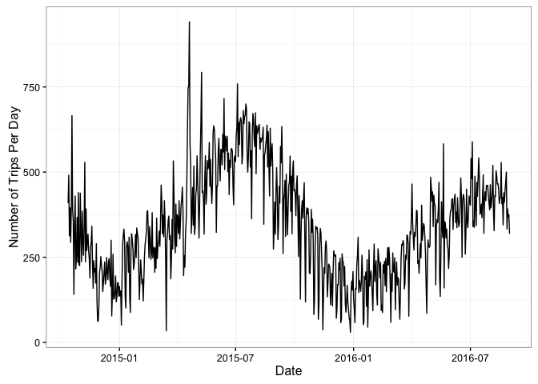
Hmm, grouping by day is a little noisy. Perhaps we should try by month?
Plotting Trips Per Month (By Season)
First, we need to create a “Year-Month” variable
start_date_ym <- trip_2 %>% mutate(ym = paste(year(start_date),
month(start_date), sep = "/"))Now plot. I think I’ll plot this by month but color it by season (where December, January, and February are “winter”, March, April, and May are “spring”, June, July, August are “summer”, and September, October, November are “autumn”)
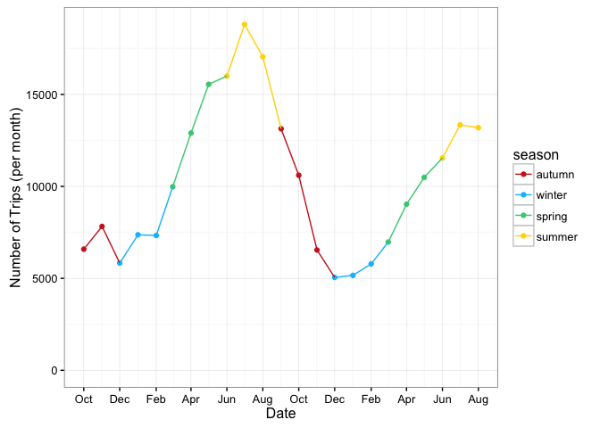
Well that intuitively makes sense. The number of trips taken per month increases in the spring, reaches a maximum in the summer, declines through the fall, remains fairly stable in the winter and then repeats.
Average Trip Duration
Great! I wonder how the average trip duration fluctuates over this time period.
# Convert Trip Duration from Seconds to Minutes
Trip_Duration_Month <- start_date_ym %>% mutate(trip_duration_min = tripduration/60) %>%
group_by(ym) %>% select(ym, trip_duration_min) %>% summarise(Avg = mean(trip_duration_min),
sd = sd(trip_duration_min)) %>% mutate(se = sd/sqrt(n()))Now to plot the average trip duration (in minutes) (plus or minus standard error), with colors indicating season.
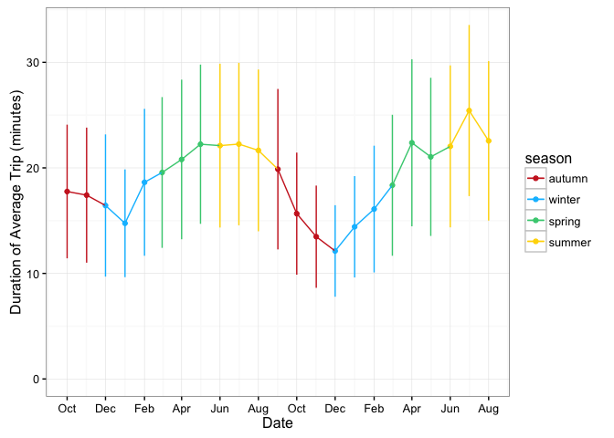
There’s surprisingly not a huge range in trip durations here.
The little bit of variation here makes logical sense. Longer trips were being taken in the spring and summer months rather than the fall and winter. It’s also notable that the spring and summer of 2016 may have shown fewer trips than the previous year, show a slight increase in average trip length.
Number of Trips by Day of Week
I wonder if people are using this service to commute to/from work. Let’s look at the number of trips by day of the week.
First, let’s create a Day of the Week variable.
trip_2$wd <- wday(trip_2$start_date, label = TRUE)Now to plot the total number of trips by day of the week.
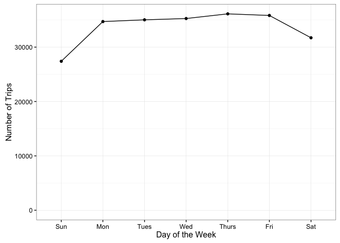
Ok, so there are definitely more trips during the week than on the weekends. I wonder if this varies by season too.
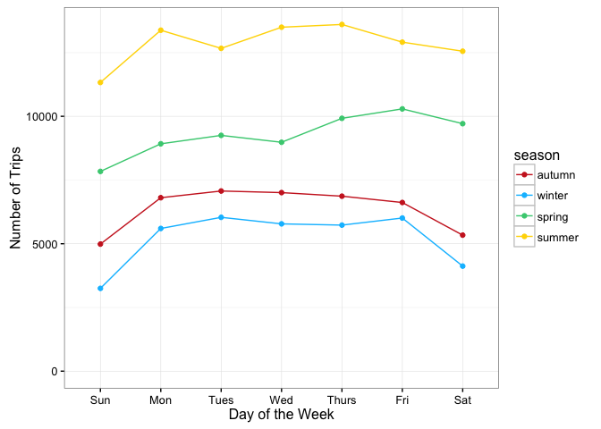
So it looks like usage is relatively consistent across seasons, at least as far as the number of trips are concerned.
Number of Trips by Time of Day
How about time of day? Are people using these around commuting times during the week and later on weekends?
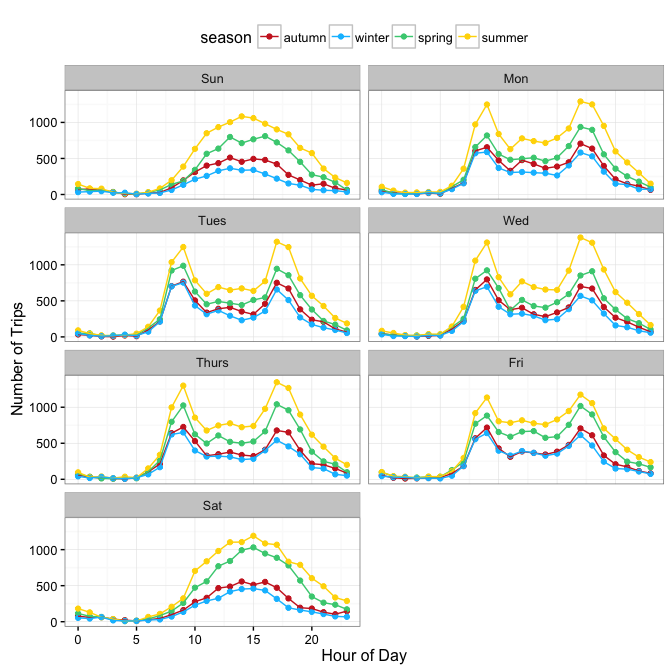
Wow, looks like regardless of the season, people are commuting to/from work using this service (there’s a spike between 8 and 10 AM and another between 4 and 7 PM Monday through Friday). But the weekends seem to be popular between 10 AM and 10 PM.
Number of Trips by Member Type
I wonder if different types of members (those who have a membership vs. those that bought a 24 hour or 3 day pass) vary in the number of trips they take.
If I were to guess, I’d think the short-term passes would be ideal for tourists or people looking for a quick weekend trip, whereas members may be more likely to continue using the service year-round. Let’s check out my assumptions by plotting, once again colored by season.
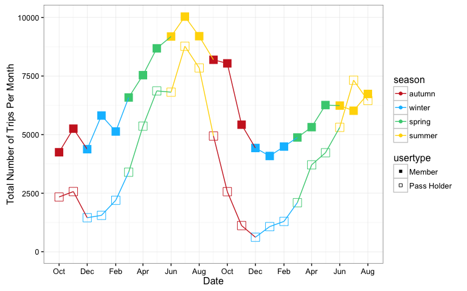
Surprisingly (to me, at least), different types of users seem to follow similar patterns of usage. Spring and Summer are definitely the most popular times for anyone to ride a bike in the Seattle area.
Trip Duration by Member Type
While it may seem that the trip duration shouldn’t vary widely by member type, a quick look at Pronto!’s pricing structure may make you reconsider that assumption. You see, while you have to purchase either an annual membership ($85/year), a 24-Hour Pass ($8) or a 3-Day Pass ($16) there is still a cap on the duration of your trip. For members, any ride under 45 minutes is free, but any ride going over 45 minutes will incur a fee of $2 for every additional 30 minutes. For short-term users, any ride under 30 minutes is free, but going over that time limit would cost you an additional $2 for the first 30 minutes and $5 for each additional 30 minutes after that!
Let’s see if these time limits cause differing behaviors in our users.
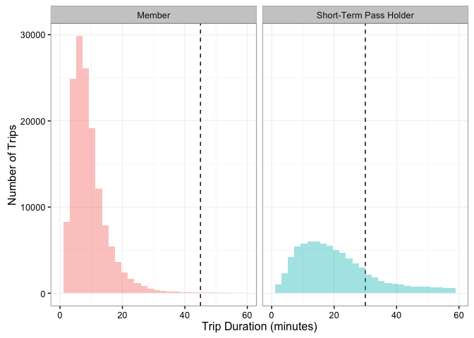
Ok, so our members are pretty good about making sure that they return their bike before they incur extra charges, but the short-term pass holders frequently go over their time limit. I wonder how the cost of a trip varies for members and pass holders. Let’s try to calculate the cost of a trip.
trip_cost <- trip_2 %>% mutate(cost = ifelse(usertype == "Member" &
tripduration_m <= 45, 0, ifelse(usertype == "Member" & tripduration_m >
45 & tripduration_m <= 75, 2, ifelse(usertype == "Member" &
tripduration_m > 75, (2 + 5 * ((tripduration_m - 75)/30)),
ifelse(usertype == "Short-Term Pass Holder" & tripduration_m <=
30, 0, ifelse(usertype == "Short-Term Pass Holder" &
tripduration_m > 30 & tripduration_m < 60, 2, ifelse(usertype ==
"Short-Term Pass Holder" & tripduration_m > 60, (2 +
5 * ((tripduration_m - 60)/30)), "unknown")))))))That was a complicated nested if/else statement! Let’s see how much these folks are paying in additional fees!
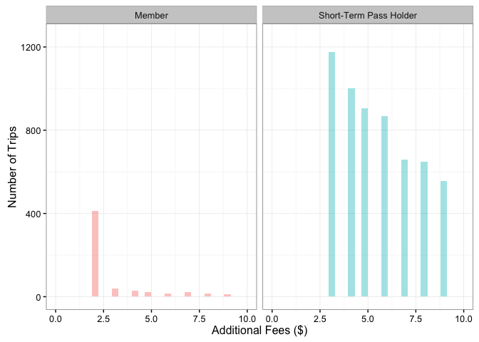
Looks like short-term pass holders (who are already paying a higher price per day of biking), are also paying lots of extra fees. This could be because they are unfamiliar with the pricing structure and don’t realize they need to return their bike to a station within 30 minutes without getting charged. It is also possible that short-term users may be tourists who don’t know their way around as easily, and thus can’t find their way to a station within the time limit.
Member Demographics
We only seem to have age and gender information about people who have an annual Pronto! membership, so we can at least take a look at what types of people use this service.
Let’s look first at age.
trip_2$usertype <- as.factor(trip_2$usertype)
trip_age <- trip_2 %>% mutate(age = year(start_dt) - birthyear)
hist(trip_age$age, main = "Member Age", xlab = "Number of Riders",
col = "#56B4E9", breaks = 25)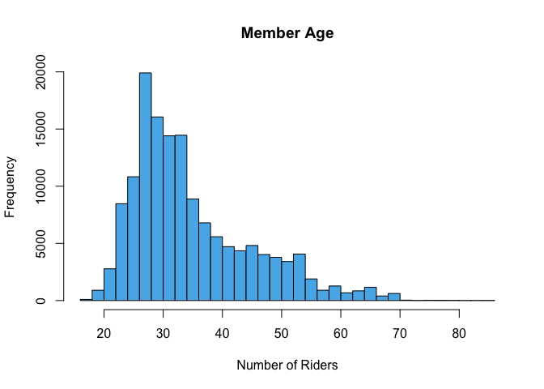
My first instinct here is to say “Wow! There’s a lot of 20 and 30-somethings that use this service!” But this figure (and these data) may be a little misleading. You see, we don’t have any sort of Rider ID number, meaning we can’t take “individual activity level” into account. So we can’t tell if the tallest spike is because 5 very athletic 28-year-olds went on 4,000 trips each, or if 100 people went on 200 trips each, or if there were 20,000 28-year-olds who each only used the service once.
The same problem would arise if we looked at gender, so I’m just going to move beyond demographics.
Trip Routes
I’m going to do my best to look at some potential routes that these users could have taken, given their start and stop locations and duration. All of these data will be analyzed using the ggmap package and Google Maps API (more info here)
To start, I need to combine the coordinates of the station (from the station dataset) with the data from the trip dataset. Let’s get started.
# Create a dataframe with only station ID, latitude, and
# longitude
station_coord <- station %>% select(station_id, lat, long)
# Trim our trip dataframe to only include start & stop
# dates/times, and station ID
trip_route <- trip_2 %>% select(trip_id, starts_with("start_"),
starts_with("stop_"), from_station_id, to_station_id, tripduration)
# Match by station ID
trip_route$start_lat <- station_coord[match(trip_route$from_station_id,
station_coord$station_id), "lat"]
trip_route$start_long <- station_coord[match(trip_route$from_station_id,
station_coord$station_id), "long"]
trip_route$stop_lat <- station_coord[match(trip_route$to_station_id,
station_coord$station_id), "lat"]
trip_route$stop_long <- station_coord[match(trip_route$to_station_id,
station_coord$station_id), "long"]Great! Now to start looking at routes.
I’ll start by looking at the possible routes of the very first trip.
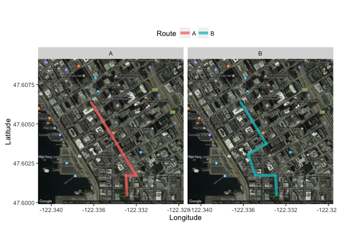
Cool! So Google Maps API was able to give us two potential routes for this particular trip. We can make a best guess on which trip was taken by determining the trip duration.
# Converting trip duration to minutes
trip_route$tripduration <- trip_route$tripduration/60
# Finding actual trip duration
trip_route[1, "tripduration"]## [1] 16.43225Ok, so the actual trip on October 13, 2014 took 16.4 minutes. Let’s see how long each of the hypothetical trips took.
leg_1 %>% group_by(route) %>% summarise(duration = sum(minutes))## # A tibble: 2 × 2
## route duration
## <chr> <dbl>
## 1 A 4.950000
## 2 B 5.583333Hmm, looks like Google estimates those trips should have only taken between 5 and 6 minutes. It is very possible that our user did not go directly from one station to the other. It’s also possible that he got stopped at a few red lights along his route.
Perhaps this, being the first trip, was a demo of some sort. Let’s check out the last trip that was recorded and see if we still run into the same time disconnect.
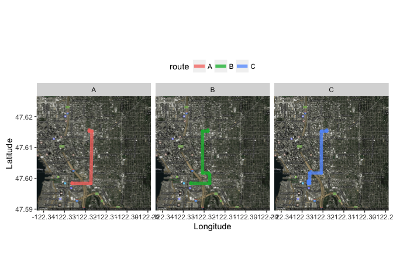
Well this was certainly a longer ride than the first one we looked at!How long did this trip take?
trip_route[nrow(trip_route), "tripduration"]## [1] 31.60052Ok, so how long did Google estimate it should take?
leg_2 %>% group_by(route) %>% summarise(duration = sum(minutes))## # A tibble: 3 × 2
## route duration
## <chr> <dbl>
## 1 A 9.50000
## 2 B 12.13333
## 3 C 13.45000Once again, the trip took quite a bit longer than any of the routes shown here. It’s possible that estimating the routes taken by cyclists is not the best use of this dataset. So, what else is there to look at?
Station by Trip Departure and arrival
I suppose we can see which stations have the most trip departures and which have the most arrivals. Unless people are always making round-trip journeys, these are not likely to be equal.
Station Usage
Trip Departure
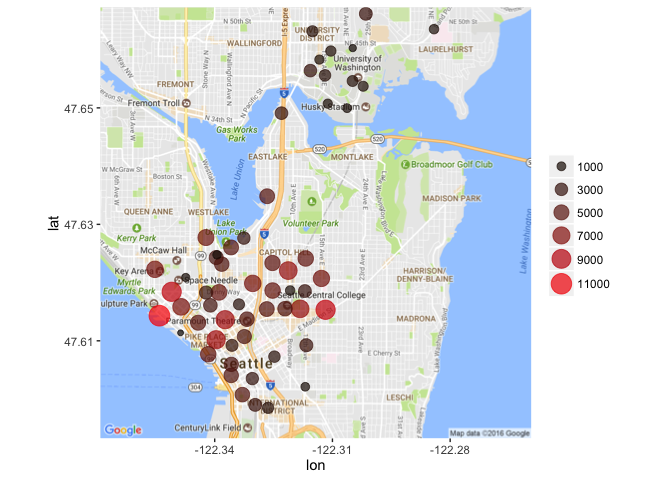
Trip Arrival
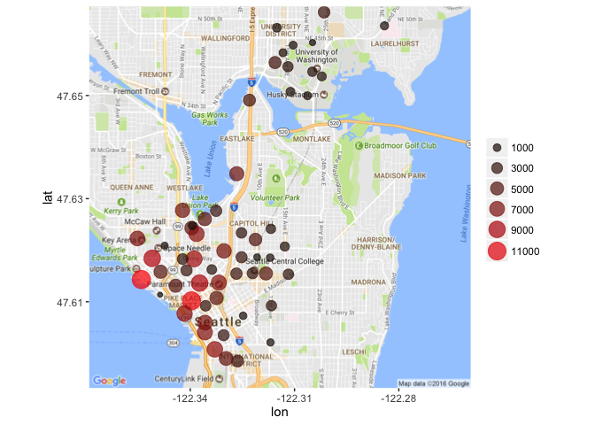
Great, so it looks like the station that sends the highest number of bikes out and takes the highest number of bikes in is located at Pier 69 / Alaskan Way & Clay Street. Looks like this is pretty close to a few parks and several big tourist attractions.
Also, if you flip between “Departures” and “Arrivals”, you’ll notice that quite a few bikes are picked up in the Capitol Hill area, but are returned down by the coast. If you’re unfamiliar with Seattle’s topography, Capitol Hill is aptly named because it’s situated on a very steep hill. It makes sense that people would borrow bikes to ride down the hill, but not want to borrow a bike to go back up the hill. Interesting!
Exploring the Weather Dataset
Now that I’ve visualized all that I can think of in terms of the “trips” dataset, it’s time to take a brief look at the weather dataset.
Let’s get a quick reminder of what we’re looking at here.
glimpse(weather)## Observations: 689
## Variables: 21
## $ Date <chr> "10/13/2014", "10/14/2014", "10/15/...
## $ Max_Temperature_F <int> 71, 63, 62, 71, 64, 68, 73, 66, 64,...
## $ Mean_Temperature_F <int> 62, 59, 58, 61, 60, 64, 64, 60, 58,...
## $ Min_TemperatureF <int> 54, 55, 54, 52, 57, 59, 55, 55, 55,...
## $ Max_Dew_Point_F <int> 55, 52, 53, 49, 55, 59, 57, 57, 52,...
## $ MeanDew_Point_F <int> 51, 51, 50, 46, 51, 57, 55, 54, 49,...
## $ Min_Dewpoint_F <int> 46, 50, 46, 42, 41, 55, 53, 50, 46,...
## $ Max_Humidity <int> 87, 88, 87, 83, 87, 90, 94, 90, 87,...
## $ Mean_Humidity <int> 68, 78, 77, 61, 72, 83, 74, 78, 70,...
## $ Min_Humidity <int> 46, 63, 67, 36, 46, 68, 52, 67, 58,...
## $ Max_Sea_Level_Pressure_In <dbl> 30.03, 29.84, 29.98, 30.03, 29.83, ...
## $ Mean_Sea_Level_Pressure_In <dbl> 29.79, 29.75, 29.71, 29.95, 29.78, ...
## $ Min_Sea_Level_Pressure_In <dbl> 29.65, 29.54, 29.51, 29.81, 29.73, ...
## $ Max_Visibility_Miles <int> 10, 10, 10, 10, 10, 10, 10, 10, 10,...
## $ Mean_Visibility_Miles <int> 10, 9, 9, 10, 10, 8, 10, 10, 10, 6,...
## $ Min_Visibility_Miles <int> 4, 3, 3, 10, 6, 2, 6, 5, 6, 2, 10, ...
## $ Max_Wind_Speed_MPH <int> 13, 10, 18, 9, 8, 10, 10, 12, 15, 1...
## $ Mean_Wind_Speed_MPH <int> 4, 5, 7, 4, 3, 4, 3, 5, 8, 8, 9, 4,...
## $ Max_Gust_Speed_MPH <chr> "21", "17", "25", "-", "-", "-", "1...
## $ Precipitation_In <dbl> 0.00, 0.11, 0.45, 0.00, 0.14, 0.31,...
## $ Events <chr> "Rain", "Rain", "Rain", "Rain", "Ra...Great, let’s change the Date variable to a POSIXct object, and make the “Events” variable factors.
# Adjusting the Date Variable
weather$Date <- mdy(weather$Date)
# Adjusting the Events Variable
weather$Events <- as.factor(weather$Events)Great. Now how many weather events are there?
levels(weather$Events)## [1] "" "Fog" "Fog , Rain"
## [4] "Fog-Rain" "Rain" "Rain , Snow"
## [7] "Rain , Thunderstorm" "Rain-Snow" "Rain-Thunderstorm"
## [10] "Snow"Wow! So mostly combinations of rain…
Let’s combine a few of these things that seem to represent the same event.
weather$Events <- gsub("Fog , Rain|Fog-Rain", "Fog-Rain", weather$Events)
weather$Events <- gsub("Rain , Snow|Rain-Snow", "Rain-Snow",
weather$Events)
weather$Events <- gsub("Rain , Thunderstorm|Rain-Thunderstorm",
"Rain-TS", weather$Events)
weather$Events <- as.factor(weather$Events)Where else does this dataset need to be cleaned up? Let’s look for any missing values.
summary(weather)## Date Max_Temperature_F Mean_Temperature_F
## Min. :2014-10-13 Min. :39.00 Min. :33.00
## 1st Qu.:2015-04-03 1st Qu.:55.00 1st Qu.:48.00
## Median :2015-09-22 Median :63.00 Median :56.00
## Mean :2015-09-22 Mean :64.03 Mean :56.58
## 3rd Qu.:2016-03-12 3rd Qu.:73.00 3rd Qu.:65.00
## Max. :2016-08-31 Max. :98.00 Max. :83.00
## NA's :1
## Min_TemperatureF Max_Dew_Point_F MeanDew_Point_F Min_Dewpoint_F
## Min. :23.00 Min. :10.00 Min. : 4.00 Min. : 1.00
## 1st Qu.:43.00 1st Qu.:44.00 1st Qu.:41.00 1st Qu.:36.00
## Median :50.00 Median :50.00 Median :46.00 Median :42.00
## Mean :49.45 Mean :48.57 Mean :45.02 Mean :40.87
## 3rd Qu.:57.00 3rd Qu.:54.00 3rd Qu.:51.00 3rd Qu.:47.00
## Max. :70.00 Max. :77.00 Max. :59.00 Max. :57.00
##
## Max_Humidity Mean_Humidity Min_Humidity
## Min. : 40.00 Min. :24.00 Min. :15.00
## 1st Qu.: 78.00 1st Qu.:60.00 1st Qu.:38.00
## Median : 86.00 Median :70.00 Median :50.00
## Mean : 84.54 Mean :68.51 Mean :49.97
## 3rd Qu.: 90.00 3rd Qu.:79.00 3rd Qu.:63.00
## Max. :100.00 Max. :95.00 Max. :87.00
##
## Max_Sea_Level_Pressure_In Mean_Sea_Level_Pressure_In
## Min. :29.47 Min. :29.31
## 1st Qu.:30.01 1st Qu.:29.93
## Median :30.12 Median :30.04
## Mean :30.12 Mean :30.03
## 3rd Qu.:30.24 3rd Qu.:30.16
## Max. :30.86 Max. :30.81
##
## Min_Sea_Level_Pressure_In Max_Visibility_Miles Mean_Visibility_Miles
## Min. :29.14 Min. : 3.00 Min. : 1.00
## 1st Qu.:29.84 1st Qu.:10.00 1st Qu.: 9.00
## Median :29.96 Median :10.00 Median :10.00
## Mean :29.94 Mean : 9.99 Mean : 9.43
## 3rd Qu.:30.08 3rd Qu.:10.00 3rd Qu.:10.00
## Max. :30.75 Max. :10.00 Max. :10.00
##
## Min_Visibility_Miles Max_Wind_Speed_MPH Mean_Wind_Speed_MPH
## Min. : 0.000 Min. : 4.00 Min. : 0.000
## 1st Qu.: 4.000 1st Qu.: 8.00 1st Qu.: 3.000
## Median : 9.000 Median :10.00 Median : 4.000
## Mean : 7.245 Mean :11.09 Mean : 4.631
## 3rd Qu.:10.000 3rd Qu.:13.00 3rd Qu.: 6.000
## Max. :10.000 Max. :30.00 Max. :23.000
##
## Max_Gust_Speed_MPH Precipitation_In Events
## Length:689 Min. :0.0000 :361
## Class :character 1st Qu.:0.0000 Fog : 16
## Mode :character Median :0.0000 Fog-Rain : 13
## Mean :0.1051 Rain :287
## 3rd Qu.:0.0900 Rain-Snow: 3
## Max. :2.2000 Rain-TS : 7
## Snow : 2Ok, so we have one NA for “Mean_Temperature_F”, “Max_Gust_Speed_MPH” seems to be represented as a character vector because it has “-” representing NA values, and we have 361 unlabelled Events.
Max Gust Speed should be the easiest one to fix, so we’ll start there.
weather$Max_Gust_Speed_MPH <- gsub("-", 0, weather$Max_Gust_Speed_MPH)
weather$Max_Gust_Speed_MPH <- as.numeric(weather$Max_Gust_Speed_MPH)Great! We changed any absent values for Maximum Gust Speed to 0 MPH and changed the variable type to a number. Uh oh, looks like there are still 185 NA values for Max Gust Speed. That’s a lot to try to replace. I would normally suggest generating a model that could try to predict those values based on other known values, but for now, we’ll just leave it alone.
Since there is only one missing Mean Temperature, it seems the easiest way to fill in the hole is to look up what the average temperature was that day. Note: I certainly would not recommend this if it were any more than one missing value
weather[which(is.na(weather$Mean_Temperature_F)), 1]## [1] "2016-02-14"Ok, so we’re looking for the Mean Temperature on February 14, 2016 in the zipcode 98101 (according to dataset documentation). Looks like the mean temperature that day was 50 degrees F.
Time to substitute in that value.
weather[490, "Mean_Temperature_F"] <- "50"Perfect. Now what to do with the unlabelled “Event” categories. The dataset “ReadMe” file from Pronto! doesn’t include any information about this weather dataset. The only thing I can think to do is refer to the Event as “Other”.
weather$Events <- gsub("^$", "Other", weather$Events)
weather$Events <- as.factor(weather$Events)Ok, we’re in good shape. Now to do a few quick visualizations.
Temperature
Minimum
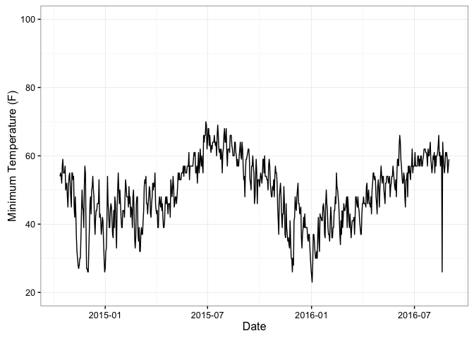
Mean
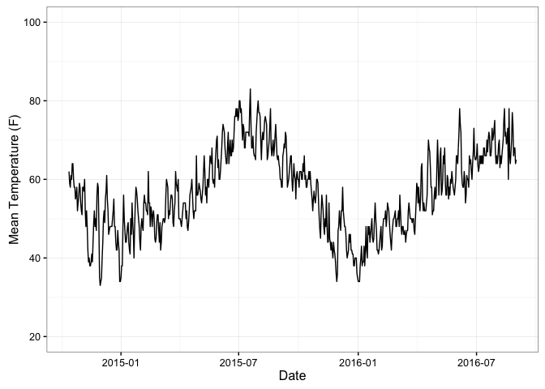
Maximum
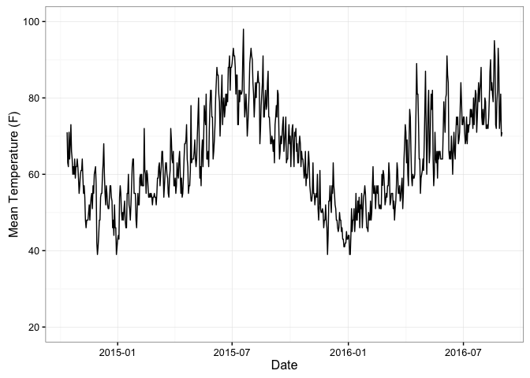
Events
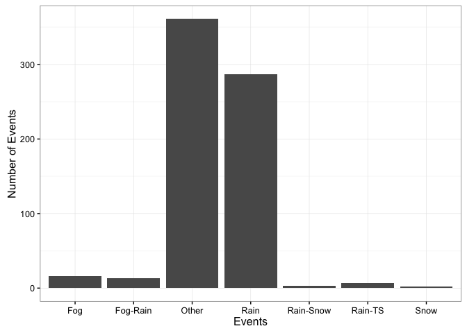
Combining Weather and Trip Datasets
Good, so we can now see some parts of the weather data. Let’s combine the weather data with our trip data. Let’s try a left join from the dplyr package.
# Make a copy of the data frame
trip_3 <- trip_2
# Change column name in trip_3 to match weather dataset
trip_3$Date <- trip_3$start_date
# Left join the trip and weather dataframes by date.
trip_weather <- left_join(trip_3, weather, by = "Date")Mean Temperature vs. Number of Trips
Ok. Now let’s see how the number of trips per day is influenced by weather (mean temperature, rounded to the nearest 5 degrees F)
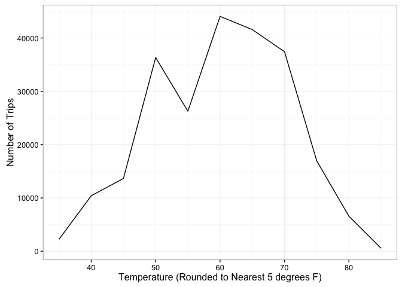
So, as expected, there are more trips when the weather is mild but not too warm (over 70F) or too cold (below 50F). However, this figure may be influenced by the overall number of days that exhibited each mean temperature. Let’s try to standardize that.
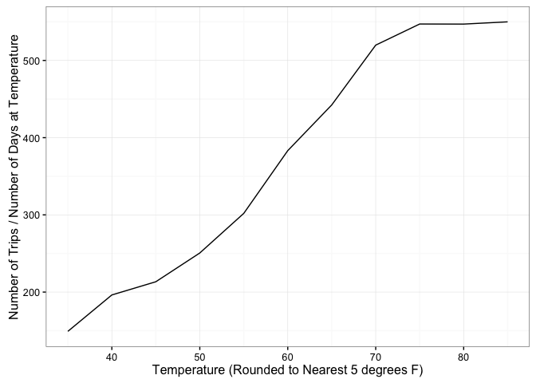
So when we standardize our measurements, correcting for the number of days that actually reached each temperature, we see a steady increase in the number of trips until around 75F where the trend levels off. People are more likely to ride a bike when it’s warm outside.
Precipitation vs. Number of Trips
If you’ve ever heard of Seattle, you probably hear that it rains all the time there. Let’s see if that has an impact on the number of trips taken in a day.
We’ll start with a figure standardized for number of days at a precipitation level, rounded to the nearest 0.2 inches.
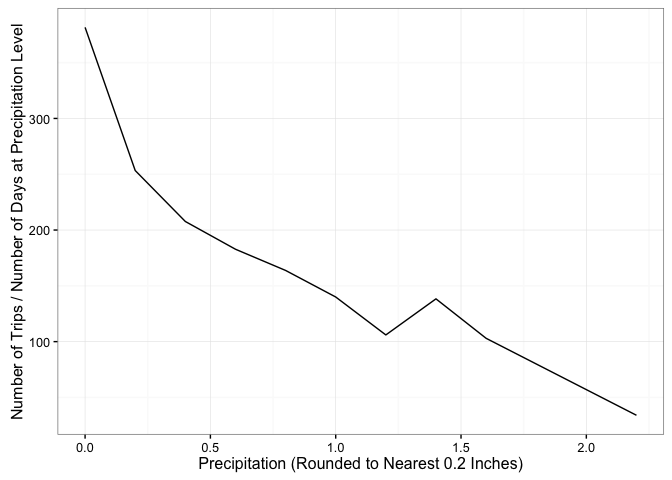
Looks like even Seattleites have a limit when it comes to riding a bike in the rain. The more it rained, the fewer trips were taken per day.
Conclusions
So what did we learn from all of this? In the nearly 2 years since Pronto! opened in Seattle:
- 236,065 bike trips were taken using this service
- More trips occur in the spring and summer than winter/autumn
- More trips occur during warm/dry weather
- People tend to ride downhill more frequently than uphill
- Pronto! bikes are used for work commutes during the week and more leisurely use on weekends
- Short-Term Pass Holders are more likely to incur extra charges due to surpassing their time limit
Suggestions for Pronto!
- Give users bonuses for bringing bikes back to a station on the top of the hill
- Hold discounts in fall/winter
- Find a way to alert short-term users that their time limit will be ending soon, and where the nearest station is to them at that time
- Consider a 3rd membership option: “Commuter”. This may allow users to take bikes between 7-10 AM and 4-7 PM for free, but operate under a different time limit schedule during other times of day.
As always, I appreciate any and all feedback from my work and appreciate you taking the time to see what I’ve done. Thanks!